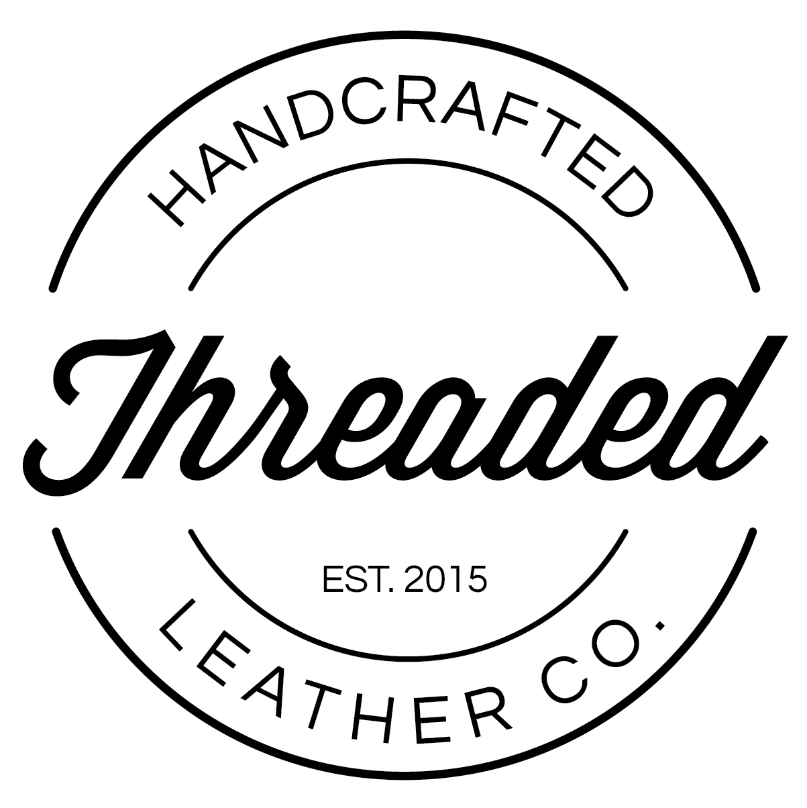

Experience
BYU Office of Information Technology
Assistant Systems Administrator
- Managed the BYU Exchange servers that support 10,000+ end users
- Resolved 200+ service tickets that the OIT help desk was unable to solve
- Improved BYU's productivity through PowerShell scripting on communication servers,
including a script that discovered 30+ broken surveillance cameras
- Implemented an email filtering system that reduced malicious emails by 85%

Threaded Leather Co.
Owner
- Researched, funded, branded, and started a leather watch band company
- Became profitable within the first month of business
- Grew profit by 37% on average in the first 4 months through product development,
social media advertising, and customer service
Domo
Owner
- Researched, funded, branded, and started a leather watch band company
- Became profitable within the first month of business
- Grew profit by 37% on average in the first 4 months through product development,
social media advertising, and customer service
Domo
Owner
- Researched, funded, branded, and started a leather watch band company
- Became profitable within the first month of business
- Grew profit by 37% on average in the first 4 months through product development,
social media advertising, and customer service